Solv WMS · Canias
Kural motorlu depo yönetimi, Canias ERP ile entegre: hammadde kabulünden yükleme kapısına, sayımdan fasona 28 konu; el terminali, tablet ve ofis aynı programda.
Videoları bilgisayarda, büyük ekranda ve tam ekran izlemenizi öneririz.
-
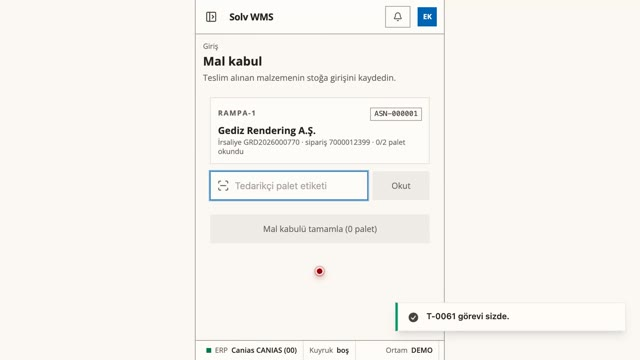
Genel bakış -
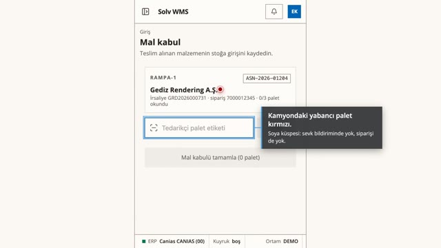
Canias ile hammadde kabulü Canias'tan gelen eksik malzeme kartı kapıda durur, istisnayla açılır. Rampada paletler okutulur, her palet için Canias'a satınalma girişi gider (WMSPurchaseSave), kilitli kayıt kuyrukta kendiliğinden yeniden denenir. -
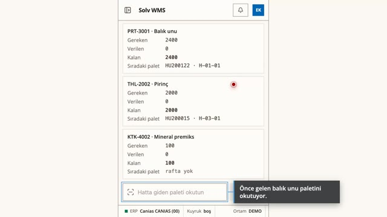
Son kullanma tarihiyle hat besleme Varsayılan çıkış sırası FEFO: operatör önce gelen paleti okutunca sistem tarihi daha yakın olanı ister. Hatta giden palet iş emrine bağlanır, Canias'a üretime çıkış hareketi gider. -
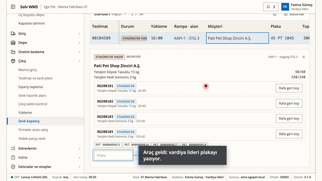
Yükleme kapısı ve sevk belgesi Toplayıcı tarihi en yakın paletleri sevk hazırlığa alır. Plaka sevk planıyla eşleşince kontrol listesi açılır, kapıda her palet okutulur, mühür numarasıyla liste tamamlanır, Canias sevk belgesini keser (WMSDeliverySave) ve e-irsaliye arkasından gider. -
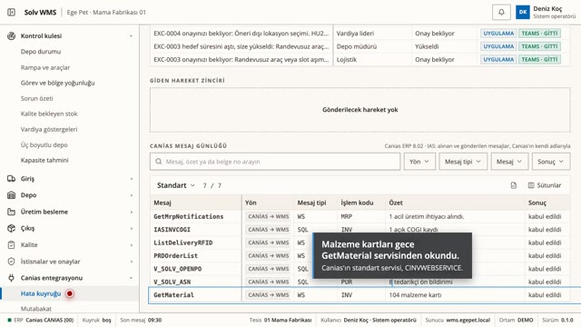
Canias arayüzü ve iş adımı tanımları Her alışveriş Canias'ın kendi adıyla: standart WMS web servisleri yazar, SQL görünümleri okunur, tesisin ListDeliveryRFID servisi sevk siparişlerini getirir. Her iş adımının tanımında Canias'a ne yazılacağı yazılı. -
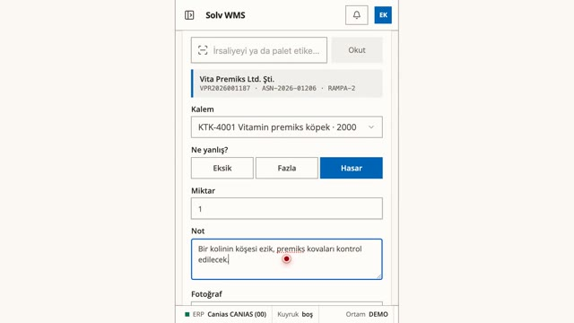
Mal kabul tutanağı Operatör el terminalinde irsaliyeyi okutur, hasarı seçer, notunu yazar, fotoğrafını çeker. Tutanak tedarikçiye kanıt olarak gider. Vardiya lideri tablette çözümü seçip tutanağı kapatır, kim ne zaman neye karar verdi kayıtta kalır. -
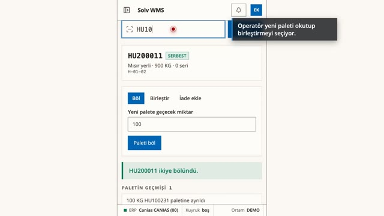
Palet aritmetiği Bir mısır paleti bölünür, ayrılan kısım yeni numara alır, sonra aynı palete geri birleştirilir. Sabahki iş emrinden artan mısır iş emrine bağlı iade olarak palete döner, Canias'a üretimden iade hareketi gider. Paletin geçmişi bölme, birleştirme ve iadeyle durur. -
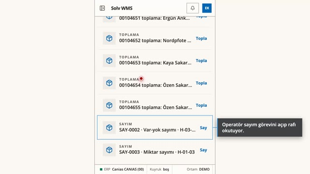
Sayım Kör sayım ve sıfır tolerans kural setinde. Vardiya lideri hammadde raflarına var-yok, tavuk yağı rafına miktar sayımı açar, sayılan raftan palet alınamaz. Operatör paletleri okutur, yan rafın paleti ve sistemde olmayan bir palet bulunur. Farklar depo müdürünün onayından sonra Canias'a sayım eksiği ve fazlası olarak gider. -
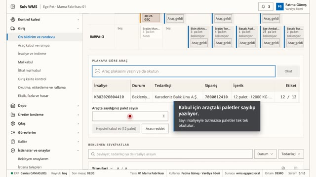
Plaka bazında kabul ve ret Balık unu aracı plakasıyla gelir, araçtaki irsaliye ve palet etiketleri görünür. Sayı tutunca araç tek tuşla bütünüyle kabul edilir, her palet için satınalma girişi Canias'a gider. Rampada olmayan palet eksik bildirilir, girişi geri alınır ve tutanak açılır. -
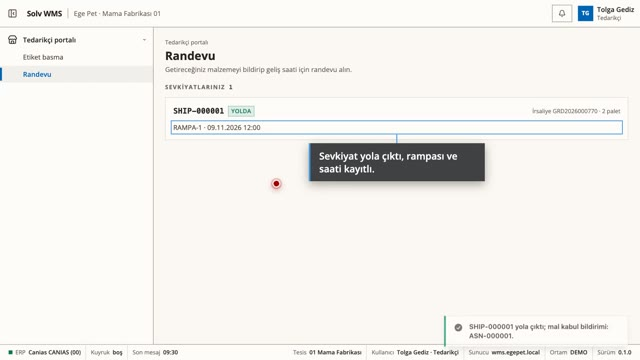
Randevu ve rampa Tedarikçi portalda etiketlerini basar, rampayı ve saati seçip randevu alır, sevke çıkarır. Vardiya lideri rampa takviminde Canias'tan gelen ön bildirimlerle portal randevusunu bir arada görür. Araç gelince mal kabul görevi açılır, operatör tedarikçinin bastığı etiketi okutur. -
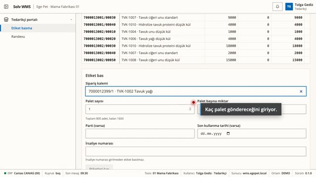
Tedarikçi portalı ve etiket Tedarikçi kendi açık siparişlerini görür, palet sayısını ve palet başına miktarı girer. İrsaliye numarası olmadan etiket basılmaz. Basılan barkodlu etiketler sipariş satırındaki kalan miktarı düşürür. -
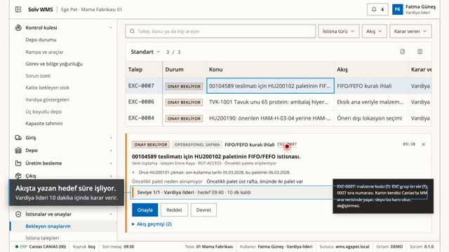
İstisna ve onay akışı Operatör FEFO kırmızısında nedenini yazıp onay ister, talep vardiya liderine ve Teams'e düşer. Onaydan sonra palet istisnayla geçer, sebep kodu ve kapanış nedeni kayda geçer. Süresi dolan talep depo müdürüne yükselir, eksik belgeli kabul iki seviyeli onaydan geçer, bütün akışlar tek tabloda. -
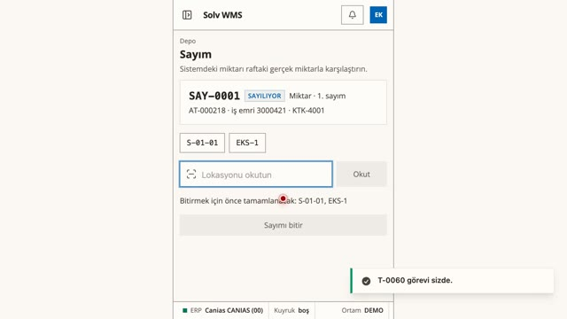
COGI kaydından otomatik sayım Canias'tan gelen COGI kaydı kendiliğinden bir sayım emri açar: premiksin son görüldüğü lokasyon ve hat. Operatör kör sayımla miktarı yazar, fark depo müdürünün onayına düşer, onaydan sonra sayım eksiği hareketiyle Canias'a gider. -
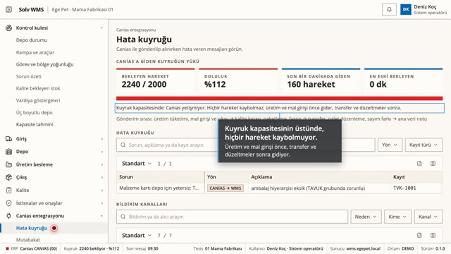
Canias kuyruğu yük altında Bir vardiyanın üretim barkodları aynı anda gelir, kuyruk kapasitesinin üstüne çıkar, hiçbir hareket kaybolmaz. El terminalinde iş durmaz: taşıma Canias'ı beklemeden biter, hareket kuyruğa girer. Kuyruk arkada boşalır, uyarı kalkar. -
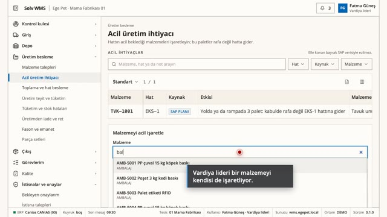
Acil üretim ihtiyacı Canias planı tavuk ununu birinci ekstrudere acil gösterir, vardiya lideri balık ununu kendisi işaretler. Elle konan bayrağı Canias verisi ezmez. Bayrağın etkisi satırda yazar: rampadaki paletler kabulde doğrudan hatta gider. -
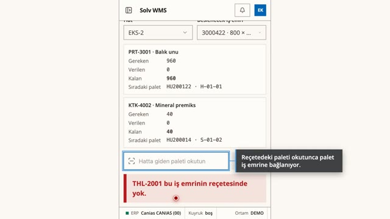
İş emri eşleştirme Hat beslenirken her palet bir iş emrine bağlanır. Reçetede olmayan palet hatta gidemez. Premiks paleti bütün gider, balık unu paletinden yalnız iş emrinin istediği kadar ayrılır, kalanı aynı numarayla rafta kalır. Canias'a üretime çıkış hareketi gider, vardiya lideri tüketimi görüp iş emrini kapatır. -
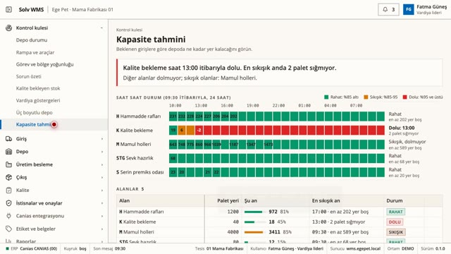
Kapasite tahmini Önümüzdeki saatlerde her bölgenin ne kadar dolacağı saat saat çizilir. Kalite bekleme alanı öğleden sonra dolar, vardiya bunu sabahtan görür. -
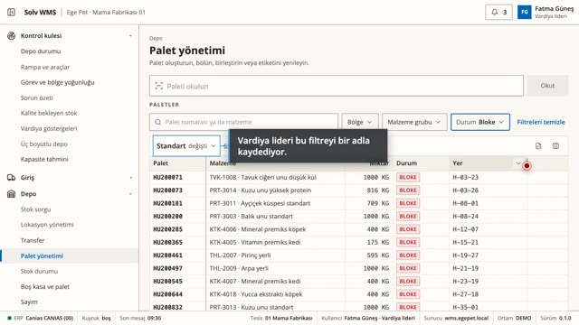
Liste, filtre ve görünüm Bütün listeler aynı biçimde: sayılı filtreler, kişiye özel kayıtlı görünüm, sıralanan ve gizlenen sütunlar, tek düğmeyle Excel. Bir kayda tıklayınca detay yanda açılır, liste yerinde kalır. -
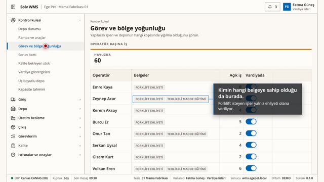
Görev ataması Görev ataması görev türü başına kural setinde. Vardiya lideri kimin elinde kaç iş olduğunu, belgelerini ve vardiyasını görür, havuzdaki görevi bir operatöre verir, görev onun el terminalinde çıkar. -
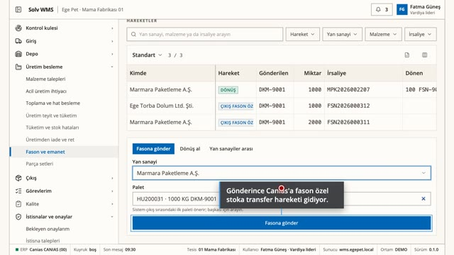
Fason ve emanet Aynı dökme mama iki fason paketleyiciye gider, her biri kendi koduyla torbada geri gönderir. Gönderimde Canias'a fason özel stoka transfer gider, dönüşte dönüş oranına göre bakiye düşer. Paketleyiciler mamayı depoya uğramadan birbirine aktarabilir, irsaliye sonradan eklenir. -
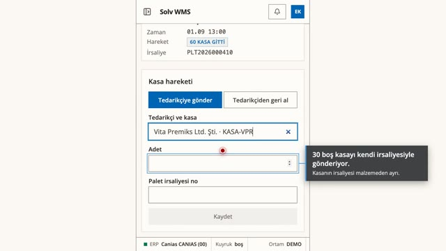
Boş kasa ve palet Tedarikçilerin dönüşlü kasa ve paletleri çevrim sözleşmesiyle izlenir. Boş kasa kendi irsaliyesiyle gönderilir, tedarikçide olandan fazlası geri alınamaz, havuzun bakiyesi her hareketle güncel. -
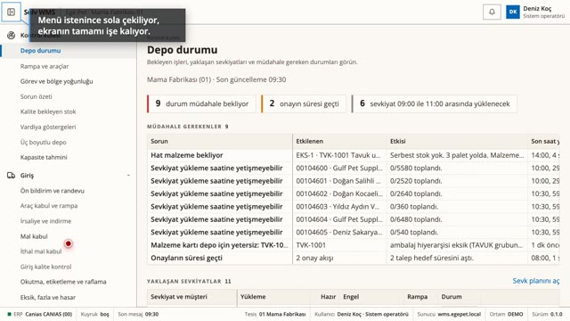
Depo yönetim sistemi Aynı program ofiste, tablette, el terminalinde ve tedarikçi portalında. Menü sistemin tamamını gösterir, durum çubuğu bağlı Canias sistemini ve kuyruğu. Program bir kuru mama fabrikası ölçeğinde kurulu, binlerce palet tek tabloda kayar. -
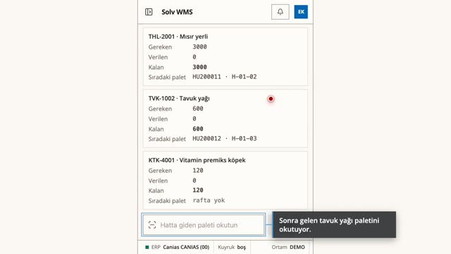
FIFO, FEFO ve son kullanma tarihi Çıkış sırası kural setinde malzeme grubu başına seçilir. Tavuk grubu FIFO'dayken sonra gelen tavuk yağı paleti reddedilir, grup FEFO'ya çevrilince son kullanma tarihi yakın olan palet hatta gider. -
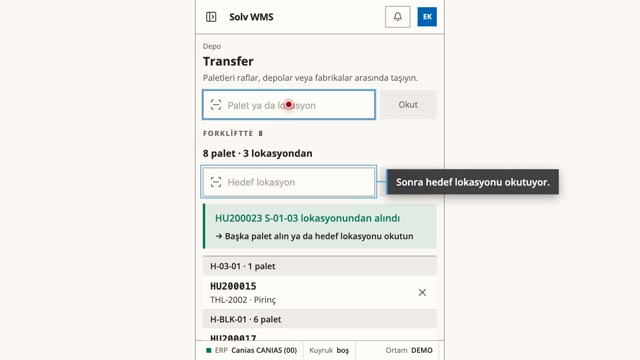
Toplu transfer Yere istiflenmiş lokasyon tek okutmayla forklifte alınır, başka paletler eklenir. Hedef bölge premiksin koşulunu sağlamıyorsa sistem hiçbir paleti bırakmaz ve nedenini yazar. Ofis taşımayı önceden planlar, görev operatörün terminaline düşer. -
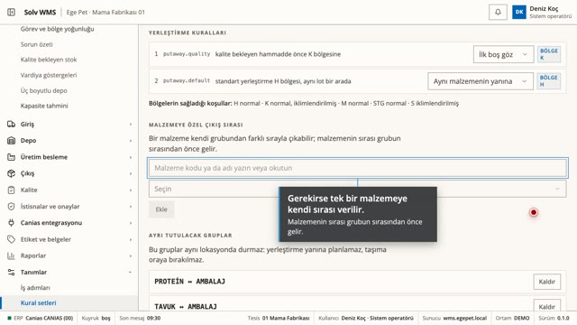
LIFO FIFO ve FEFO'nun yanında LIFO: en son giren önce çıkar. Protein grubu LIFO'ya çevrilince önce gelen balık unu paleti reddedilir, en son gelen hatta gider. -
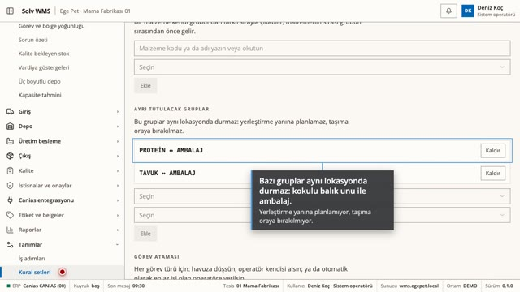
Depolama koşulları Depolama koşulu malzeme grubu başına, her bölgenin sağladığı koşul ana veride. Premiks serin odada durur, kokulu balık unu ambalajla aynı lokasyona konmaz. Normal alana bırakılmak istenen premiks paleti reddedilir, serin bölgede kabul edilir. -
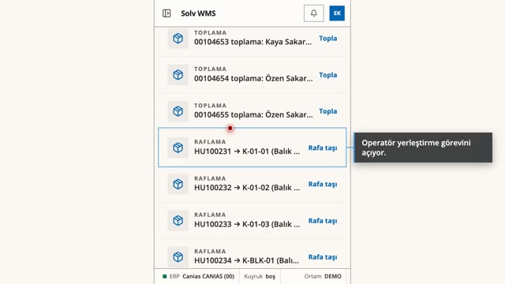
İşlem doğrulama Yerleştirmede emin misiniz sorusu kural setinden açılır. Araç plakayla kabul edilir, operatör paleti rafa götürüp okutur, sistem ne yapılacağını yazıp onay ister. Sıkı ayarda miktar gösterilmez, operatör sayıp yazar, yanlış sayı paleti yerleştirmez. -
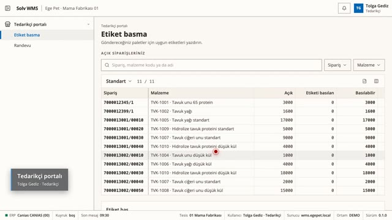
Randevu kuralları Firma başına günlük randevu hakkı ve izinli rampalar kural setinde. Tedarikçi randevu alırken yalnız izinli rampaları görür, günlük hakkı dolunca ilk boş saat yarına düşer. -
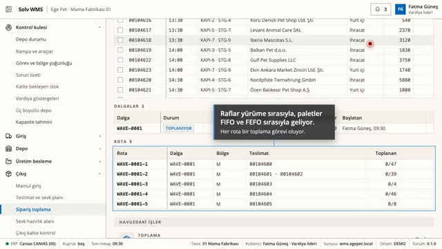
Dalga toplama Vardiya lideri en erken teslimatları tek dalgada başlatır, sistem her bölge için tek rota çıkarır. Toplayıcı el terminalinde sıradaki rafı görür, paletler FEFO sırasıyla gelir. Tek teslimatlık toplamada yanlış palet durdurulur.
Demo ortamı: Canias bağlantısı mock, firmalar ve veriler kurgu. Menüde soluk görünen ekranlar kapsamda, bu demoda kapalı.
Solv · solv.com.tr